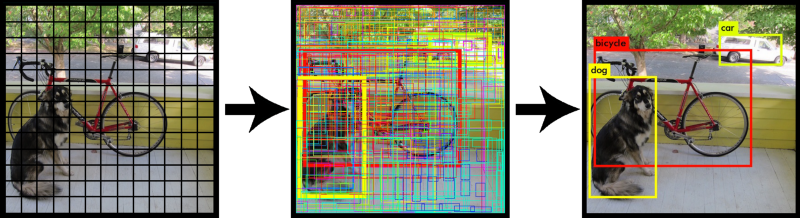

Dataset Preparation
In this phase i used amateur videos for the construction of the dataset, to be used for training, for each of which i implemented python scripts that allowed me to extract frames every x seconds, on which i then manually labeled the classes.
The tool used to label classes is LabelImg:
LabelImg generates for each image a file marked Yolo, for example image_1.jpg will have the corresponding image_1.txt in the same folder.
The .txt file has this type of format:
It has coordinates in Yolo format object-id, center_x, center_y, width, height.
- object-id represents the number corresponding to the category of objects that i listed in the 'classes.txt' file,
- center_x e center_y represent the central point of the selection rectangle,
- width e height represent the width and height of the rectangle,
After reaching an exhaustive number of instances per class, it was possible to proceed to the Object Detection phase.
Object Detection
At this stage through the use of
Google Colab and the open source neural network framework
Darknet, i have implemented a
notebook able to perform Object Detection.
Darknet is an open source neural network framework written in C and CUDA which supports the calculation of CPU e GPU.
In particular Darknet uses it as an algorithm Yolo (You Only Look Once), it allows you to recognize multiple objects and, at the same time, to identify their position and the space occupied by making a single reading of the input image.
The concept is to resize the image in order to obtain a grid of squares, to then be analyzed through a CNN, sharing every single cell of the grid as a real image.

With the help of the Anchor Boxes, the algorithm is able to recognize multiple objects within a single cell, they are extrapolated directly from the training set by clustering the Bounding Boxes using K-means algorithm.
It is also able to make predictions on 3 different scales, reducing the image in order to increase accuracy.
At the end of the processing, the bounding boxes with the highest confidence are kept, discarding the others.
The biggest advantage of using Yolo is its superb speed, it's incredibly fast and can process 45 frames per second, also understands generalized object representation, this is one of the best algorithms for object detection.
The following project uses YOLO 4 version that uses Data Augmentation
The purpose of data augmentation is to increase the variability of the input images, so that the designed object detection model has higher robustness
to the images obtained from different environments, so YoloV4 adjust the brightness, contrast, hue, saturation, and noise of an image.
For geometric distortion, performs random scaling, cropping, flipping, and rotating.
It also introduces new activation functions among which i used in the project:
- Mish: A Self Regularized Non-Monotonic Neural Activation Function.